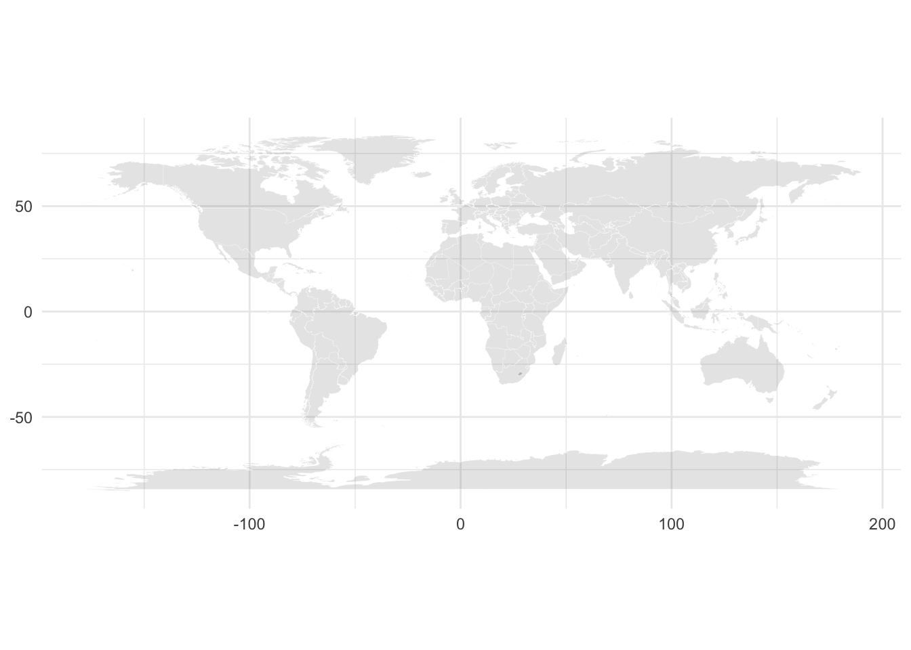

library(tidyverse)
library(tidymodels)
library(knitr)
library(colorblindr)AE 11: Multinomial classification
Important
Go to the course GitHub organization and locate the repo titled ae-11-volcanoes-YOUR_GITHUB_USERNAME to get started.
Packages
Data
For this application exercise we will work with a dataset of on volcanoes. The data come from The Smithsonian Institution via TidyTuesday.
volcano <- read_csv(here::here("ae", "data/volcano.csv"))Rows: 958 Columns: 26
── Column specification ────────────────────────────────────────────────────────
Delimiter: ","
chr (18): volcano_name, primary_volcano_type, last_eruption_year, country, r...
dbl (8): volcano_number, latitude, longitude, elevation, population_within_...
ℹ Use `spec()` to retrieve the full column specification for this data.
ℹ Specify the column types or set `show_col_types = FALSE` to quiet this message.First, a bit of data prep:
volcano <- volcano %>%
mutate(
volcano_type = case_when(
str_detect(primary_volcano_type, "Stratovolcano") ~ "Stratovolcano",
str_detect(primary_volcano_type, "Shield") ~ "Shield",
TRUE ~ "Other"
),
volcano_type = fct_relevel(volcano_type, "Stratovolcano", "Shield", "Other")
) %>%
select(
volcano_type, latitude, longitude,
elevation, tectonic_settings, major_rock_1
) %>%
mutate(across(where(is.character), as_factor))Exploratory data analysis
- Create a map of volcanoes that is faceted by
volcano_type. First, we create a map here.
world <- map_data("world")
world_map <- ggplot() +
geom_polygon(
data = world,
aes(
x = long, y = lat, group = group),
color = "white", fill = "gray50",
size = 0.05, alpha = 0.2
) +
theme_minimal() +
coord_quickmap() +
labs(x = NULL, y = NULL)
world_map
Then you need to add a layer to the map using geom_point, and reproduce the following plot.
Build a new model
- Build a new model that uses a recipe that includes geographic information (latitude and longitude). How does this model compare to the original one presented on slides? Note:
Use the same test/train split as well as same cross validation folds. Use seed 1234 for data splitting, and 9876 for cv.
New recipe, including geographic information:
Combine the original model specification as the one on slides and new recipe to obtain new workflow:
Fit resamples, and save it to volcano\_fit\_rs2
Collect metrics:
Draw ROC curves:
Compare these with the ones on slides. Comments on it. Which model do you prefer?
Acknowledgement
This exercise was inspired by https://juliasilge.com/blog/multinomial-volcano-eruptions.